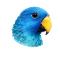

blue-eclectus
Here are some tools I've built to support scientific reasoning and research. They tackle some of the hard parts of working with scientific evidence, such as assessing evidential relevance and weighing competing explanations. These projects grew partly out of my PhD in philosophy of science.
Projects
A scientific search tool that finds and assesses papers based on their evidential relevance to your query.
A benchmark for evaluating AI agents on the expert reasoning tasks that underpin scientific evidence synthesis.
R package for Bayesian analysis of competing scientific hypotheses using the explanatory-eliminative approach.
Python framework for representing scientific arguments as graphs and converting them to Bayesian networks for probabilistic analysis.